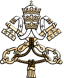

|  |


|
|
|
|
|
di Papa Francesco
SPIEGAZIONE DELLO STEMMA
“miserando atque eligendo”
LO SCUDO
Nei tratti, essenziali, il Papa Francesco ha deciso di conservare il suo stemma anteriore, scelto fin dalla sua consacrazione episcopale e caratterizzato da una lineare semplicità.
Lo scudo blu è sormontato dai simboli della dignità pontificia, uguali a quelli voluti dal predecessore Benedetto XVI (mitra collocata tra chiavi decussate d’oro e d’argento, rilegate da un cordone rosso). In alto, campeggia l’emblema dell’ordine di provenienza del Papa, la Compagnia di Gesù: un sole raggiante e fiammeggiante caricato dalle lettere, in rosso, IHS, monogramma di Cristo. La lettera H è sormontata da una croce; in punta, i tre chiodi in nero.
In basso, si trovano la stella e il fiore di nardo. La stella, secondo l’antica tradizione araldica, simboleggia la Vergine Maria, madre di Cristo e della Chiesa; mentre il fiore di nardo indica San Giuseppe, patrono della Chiesa universale. Nella tradizione iconografica ispanica, infatti, San Giuseppe è raffigurato con un ramo di nardo in mano. Ponendo nel suo scudo tali immagini, il Papa ha inteso esprimere la propria particolare devozione verso la Vergine Santissima e San Giuseppe.
IL MOTTO
Il motto del Santo Padre Francesco è tratto dalle Omelie di San Beda il Venerabile, sacerdote (Om. 21; CCL 122, 149-151), il quale, commentando l’episodio evangelico della vocazione di San Matteo, scrive: “Vidit ergo lesus publicanum et quia miserando atque eligendo vidit, ait illi Sequere me” (Vide Gesù un pubblicano e siccome lo guardò con sentimento di amore e lo scelse, gli disse: Seguimi).
Questa omelia è un omaggio alla misericordia divina ed è riprodotta nella Liturgia delle Ore della festa di San Matteo. Essa riveste un significato particolare nella vita e nell'itinerario spirituale del Papa. Infatti, nella festa di San Matteo dell'anno 1953, il giovane Jorge Bergoglio sperimentò, all’età di 17 anni, in un modo del tutto particolare, la presenza amorosa di Dio nella sua vita. In seguito ad una confessione, si sentì toccare il cuore ed avvertì la discesa della misericordia di Dio, che con sguardo di tenero amore, lo chiamava alla vita religiosa, sull'esempio di Sant'Ignazio di Loyola.
Una volta eletto Vescovo, S.E. Mons. Bergoglio, in ricordo di tale avvenimento che segnò gli inizi della sua totale consacrazione a Dio nella Sua Chiesa, decise di scegliere, come motto e programma di vita, l'espressione di San Bedamiserando atque eligendo, che ha inteso riprodurre anche nel proprio stemma pontificio.
Copyright © Dicastero per la Comunicazione - Libreria Editrice Vaticana